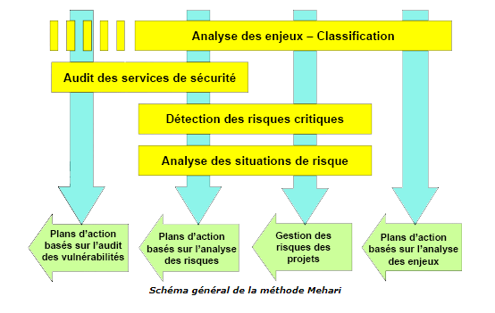
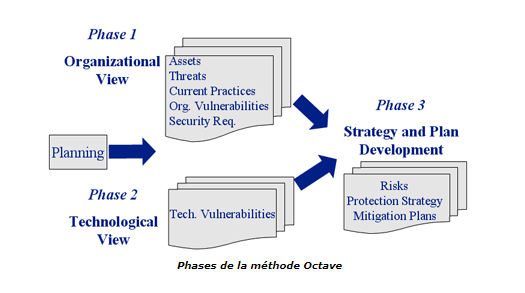

Seront abordées ici les quelques méthodes employées en Europe et en Amérique du Nord.
- EBIOS
EBIOS (Expression des Besoins et Identification des Objectifs de Sécurité) permet d'identifier les risques d'un SI et de proposer une politique de sécurité adaptée aux besoin de l'entreprise (ou d'une administration). Elle a été créée par la DCSSI (Direction Centrale de la Sécurité des Systèmes d'Information)
, du Ministrère de la Défence (France). Elle est destinée avant tout aux administrations françaises et aux entreprises.
La méthode EBIOS se compose de 5 guides (Introduction, Démarche, Techniques, Outillages) et d'un logiciel permettant de simplifier l'application de la méthodologie
explicitée dans ces guides. Le logiciel libre et gratuit (les sources sont disponibles) permet de simplifier l'application de la méthode et d'automatiser la création
des documents de synthèse. La DCSSI possède un centre de formation où sont organisés des stages à destination des organismes publics français. Un club d'utilisateurs
EBIOS a été créé en 2003 et constitue une communauté experts permettant le partage des expériences. Une base de connaissances à laquelle se connecte le logiciel EBIOS
permet d'avoir à accès à la description d'un ensemble de vulnérabilités spécifiques,
de contraintes de sécurité, de méthodes d'attaques. Elle peut être enrichie via le logiciel.
La méthode EBIOS est découpée en 5 étapes :
- étude du contexte
- expression des besoins de sécurité
- étude des menaces
- identification des objectifs de sécurité
- détermination des exigences de sécurité

L'étude du contexte permet d'identifier quel système d'information est la cible de l'étude. Cette étape délimite le périmètre de l'étude : présentation de l'entreprise, architecture du système d'information, contraintes techniques et réglementaires, enjeux commerciaux. Mais est aussi étudié le détail des équipements, des logiciels et de l'organisation humaine de l'entreprise.
L'expression des besoins de sécurité permet d'estimer les risques et de définir les critères de risque. Les utilisateurs du SI expriment durant cette étape leurs besoins de sécurité en fonction des impacts qu'ils jugent inacceptables.
L'étude des menaces permet d'identifier les risques en fonction non plus des besoins des utilisateurs mais en fonction de l'architecture technique du système d'information. Ainsi la liste des vulnérabilités et des types d'attaques est dressée en fonction des matériels, de l'architecture réseau et des logiciels employés. Et ce, quelles que soient leur origine (humaine, matérielle, environnementale) et leur cause (accidentelle, délibérée).
L'identification des objectifs de sécurité confronte les besoins de sécurité exprimés et les menaces identifiées afin de mettre en évidence les risques contre lesquels le SI doit être protégé. Ces objectifs vont former un cahier des charges de sécurité qui traduira le choix fait sur le niveau de résistance aux menaces en fonction des exigences de sécurité.
La détermination des exigences de sécurité permet de déterminer jusqu'où on devra aller dans les exigences de sécurité. Il est évident qu'une entreprise ne peut faire face à tout type de risques, certains doivent être acceptés afin que le coût de la protection ne soit pas exhorbitant. C'est notamment la stratégie de gestion du risque tel que cela est défini dans un plan de risque qui sera déterminé ici : accepter, réduire ou refuser un risque. Cette stratégie est décidée en fonction du coût des conséquences du risque et de sa probabilité de survenue. La justification argumentée de ces exigences donne l'assurance d'une juste évaluation.
EBIOS fournit donc la méthode permettant de contruire une politique de sécurité en fonction d'une analyse des risques qui repose sur le contexte de l'entreprise et des vulnérabilités liées à son SI.
- Mehari
Mehari (MEthode Harmonisée d'Analyse de RIsques) est dévelopée par le CLUSIF depuis 1995, elle est dérivée des méthodes Melisa et Marion.
Existant en langue française et en anglais, elle est utilisée par de nombreuses entreprises publiques ainsi que par le secteur privé.
Le logiciel RISICARE développé par la société BUC SA est un outil de gestion des risques basé sur la méthode Mehari.
La démarche générale de Mehari consiste en l'analyse des enjeux de sécurité : quels sont les scénarios redoutés ?, et en la classification préalable des entités du SI en fonction de trois critères de sécurité de base (confidentialité, intégrité, disponibilité). Ces enjeux expriment les dysfonctionnements ayant un impact direct sur l'activité de l'entreprise.
Puis, des audits identifient les vulnérabilités du SI. Et enfin, l'analyse des risques proprement dite est réalisée.

Mehari s'articule autour de 3 types de livrables :
Plans de la méthode Mehari
- le Plan Stratégique de Sécurité (PSS)
- les Plans Opérationnels de Sécurité (POS)
- le Plan Opérationnel d'Entreprise (POE)
Le Plan Stratégique de Sécurité fixe les objectifs de sécurité ainsi que les métriques permettant de les mesurer. C'est à ce stade que le niveau de gravité des risques encourus par l'entreprise est évalué. Il définit la politique de sécurité ainsi que la charte d'utilisation du SI pour ses utilisateurs.
Les Plans Opérationnels de Sécurité définissent pour chaque site les mesures de sécurité qui doivent être mises en oeuvre. Pour cela, ils élaborent des scénarios de compromission et audite les services du SI. Sur la base de cet audit, une évaluation de chaque risque (probabilité, impact) est réalisée permettant par la suite d'exprimer les besoins de sécurité, et par la même les mesures de protections nécessaires. Enfin, une planification de la mise à niveau de la sécurité du SI est faite.
Le Plan Opérationnel d'Entreprise assure le suivi de la sécurité par l'élaboration d'indicateurs sur les risques identifiés et le choix des scénarios de catastrophe contre lesquels il faut se prémunir.
Des bases de connaissances permettent d'automatiser certains calculs de gravité des scénarios de risques, proposent des liens entre menaces et parades...
Mehari apporte une démarche centrée sur les besoins de continuité d'activité de l'entreprise et fournit des livrables types aidés d'un guide méthodologie. Les audits qu'elle propose permettent la création de plan d'actions concrets. Cette méthode permet donc de construire une politique de sécurité destinée à pallier les vulnérabilités constatées lors des audits du Plans Opérationnels de Sécurité et d'atteindre le niveau de sécurité correspondant aux objectifs fixés dans le Plan Stratégique de Sécurité.
- Octave
Octave (Operationally Critical Threat, Asset, and Vulnerability Evaluation) a été créé par l'université de Carnegie Mellon (Etats-Unis) en 1999.
L'université de Carnegie Mellon est le centre de coordination des CERT. Octave est destinée aux grandes entreprises, mais depuis peu une version adaptée aux petites
structures existe : Octave-S. Elle a pour but de permettre à une entreprise de réaliser par elle-même l'analyse des risques de leur SI, sans aide extérieure (consultants).
Pour cela, un catalogue de bonnes pratiques de sécurité est fourni avec la méthode.
Octave est contitué de 3 phases :
Phases de la méthode Octave
- vue organisationelle
- vue technique
- stratégie de sécurité

La vue organisationnelle permet d'identifier les actifs de l'entreprise, les menaces qui pè sent sur son fonctionnement, les vulnérabilités de son organisation, les objectifs de sécurité imposés par la direction et les mesures actuelles de sécurité. Ce sont trois processus de collecte de l'information qui sont réalisés durant cette phase, chacun par une population particulière : les cadres supérieurs, les cadres opérationnels et les équipes de production. La consolidation des informations nées de ces processus amène à créer des profils de menaces.
La vue technique identifie les éléments essentiels de chaque actif identifié plus haut et les audite afin d'en connaître les vulnérabilités.
Le développement de la stratégie de sécurité consiste à évaluer les risques identifiés (impact, probabilité) plus haut et à proposer les mesures permettant de les réduire. Un plan de réduction des risques est alors planifié.
La simplicité de la méthode Octave en fait dans le principe une méthode efficace, elle est assez répandue eux Etats-Unis et au Québec. Elle est centrée sur la protection des actifs de l'entreprise et le management du personnel. Elle couvre l'ensemble des processus métiers de l'entreprise à tous les niveaux (organisationnel et technique).
Cette méthode suppose la constitution d'une équipe pluridisciplinaire comprenant des membres de tous les services de l'entreprise. Elle leur permettra d'améliorer leur connaissance de leur entreprise et de mutualiser les bonnes pratiques de sécurité.